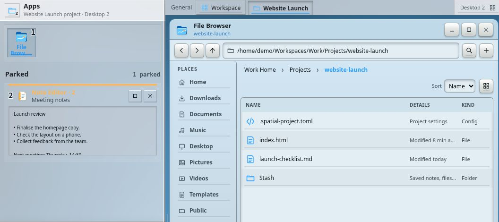
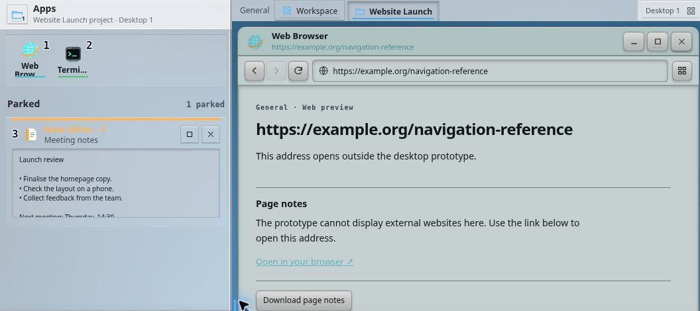
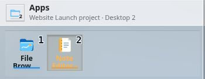
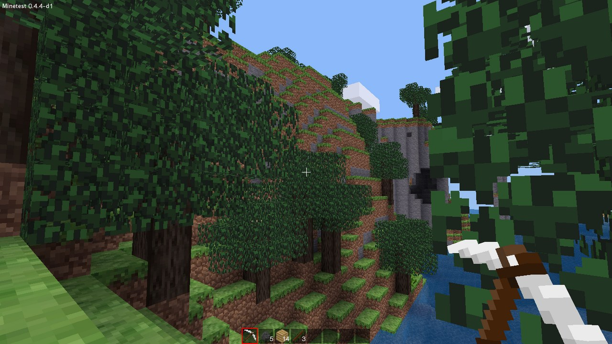
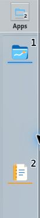
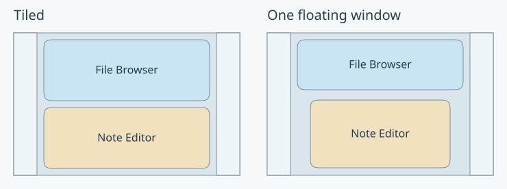
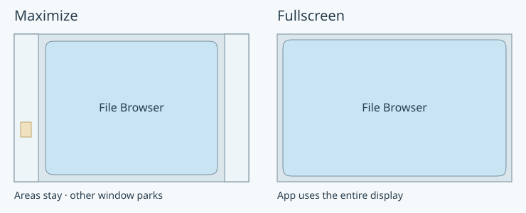
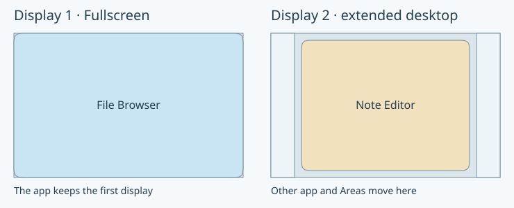
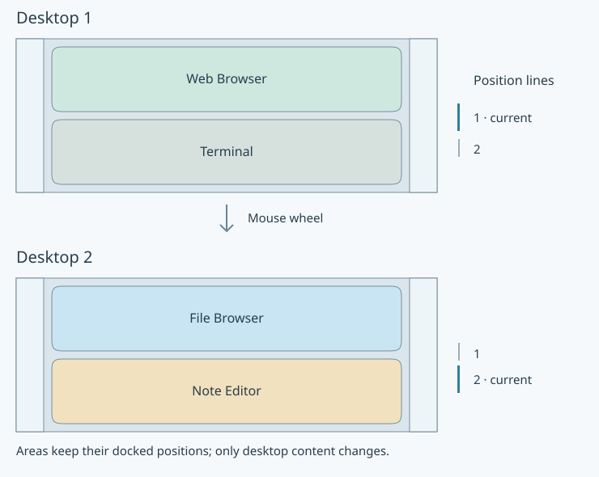

SPATIAL DESKTOP · WRITTEN BY XEF
Design philosophy.
A new edition, written one topic at a time.
Author’s draft · in progress. Chapters will be added as their text is written. The earlier AI design record and its historical screenshots remain available.
01 / APP AREA
App area.
Parking apps
On a conventional panel, I find it difficult to tell which apps are minimized and which are open, because they are all next to each other.
Here, open apps are always visible in front of you on the desktop, and appear at the top of the App area. Parked apps sit below them.
One important thing about parked apps is that they stay in the App area when you switch desktops. That makes them ideal for use as widgets.




Captured from the working prototype on 11 October 2026. These are details of the App area; click either image to see its desktop context. Try the desktop: park a window, then switch desktops.
The hotbar
On today’s desktops, quick app switching usually means Alt+Tab or an app overview. I find that clunky. That is why I borrow the numbered hotbar from games for quick switching between apps.
To make this work without taking my hand off the mouse, I use a mouse button to activate the hotbar. Since many desktops already use Win/Super for app-switching shortcuts, I use the same key here. That lets me switch quickly between apps.


In the browser demo, Alt + number is also available when the operating system intercepts Super shortcuts. Activating the hotbar from a mouse button is the intended setup; the web prototype does not configure mouse-button mappings.



Order and visibility
Apps are ordered from left to right, then from top to bottom, following the reading order of left-to-right languages such as English.
Open apps are shown in the App area only on the desktop they belong to. This avoids confusion and prevents accidentally switching desktops when selecting an app that is not on the active one.
Parked apps always come after open apps, both in their position in the App area and in the hotbar numbering. This keeps the order consistent and easy to use.
The hotbar detail shows File Browser as 1 and Note Editor as 2. The tiling illustration below shows one possible tiled arrangement. The parking comparison shows that the open app list changes with the desktop while the parked note remains available.
Expanded area and rail
Rail mode gives the user more space for app windows while keeping useful panels available — in this case, the app panel.
It also preserves the familiarity of Windows, KDE and similar desktop setups.


02 / DESKTOP AND WINDOWS
Desktop and windows.
Automatic tiling
I think the biggest reason most people, including me, use one maximized window is that constantly rearranging windows and keeping them neatly beside each other is a bother. Within a single hour, I might switch between dozens of different windows. Keeping them all aligned takes more effort than maximizing one window and switching clumsily between them with Alt+Tab.
That is why I borrow the system used by tiling window managers and make it convenient to use with a mouse. You can drag windows to reorder them, park them, or float them when you want to place a window in the centre of the screen for easier reading, for example.
One important rule is that windows never overlap one another. Two floating windows are the only exception. This makes it easier to find the window I want.
Related reference: the i3 User’s Guide shows automatic placement of new windows beside existing ones and documents a separate floating mode. It provides context for the tiling approach; Spatial Desktop’s mouse interactions and overlap rule are its own design.


Maximize and Fullscreen
When you need more space for an app but still want to keep your Areas, you can maximize its window, just as on a conventional desktop.
The difference is that the other open apps are temporarily parked, following our rule that windows do not overlap. They are restored when the maximized window returns to its normal size. Alternatively, they move to a second monitor if one is available and has enough space for them.
Middle-clicking the maximize button selects the other option: Fullscreen. This makes the app take the entire screen, including the space normally occupied by the Areas. If a second monitor is available, the Areas move there.
To compare the modes in the prototype, left-click a window’s maximize button, restore it, then middle-click the same button for Fullscreen.




Multiple desktops
Sometimes one desktop is not enough for all the apps you need for your workflow. Parked apps help with this, but they are not always enough. Virtual desktops are another way to solve it, and they have existed in desktop environments for a long time.
The problem, for me, is that switching between virtual desktops is not very intuitive. You often have to remember a three-key shortcut. Instead, I chose simple mouse-wheel scrolling when no app is focused. This works well for quick switching.
Another problem is that it is not always easy to tell which desktop you are on. I considered keeping the edge of the next desktop visible on the current one. Instead, I chose to leave more space for the apps and added small lines at the sides of the desktop to show which one is active.
Desktops are always stacked vertically. With vertical Areas, they slide in and out between them, keeping the flow. You do not have to remember which cell in a grid contains an app; you can simply scroll through the desktops.
Related reference: GNOME’s workspace switching guide documents both shortcuts and choosing an adjacent workspace from Overview. Its term “workspace” refers to virtual desktops; Spatial Desktop reserves “workspace” for its broader environment.

